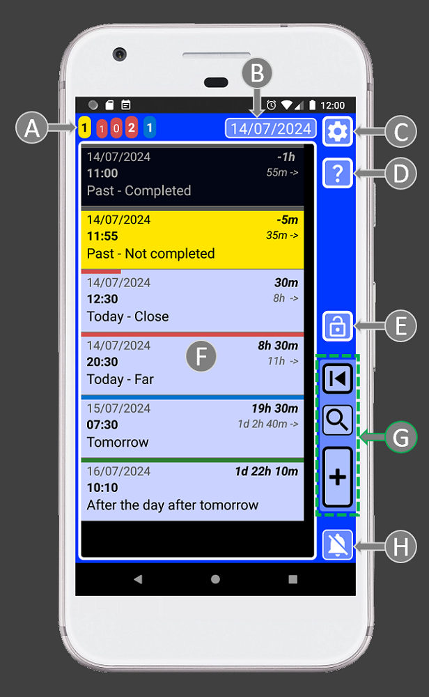
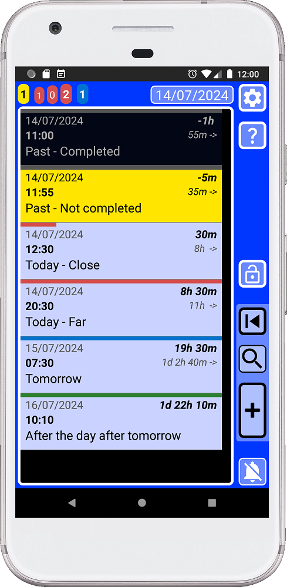
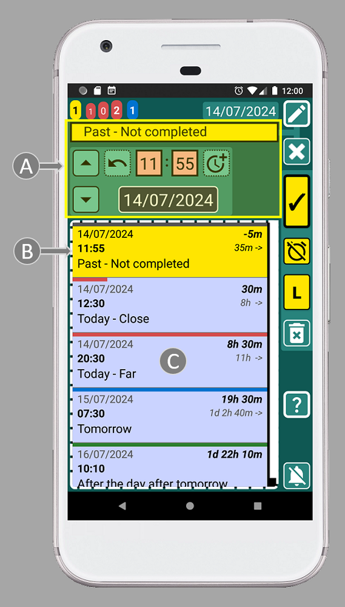
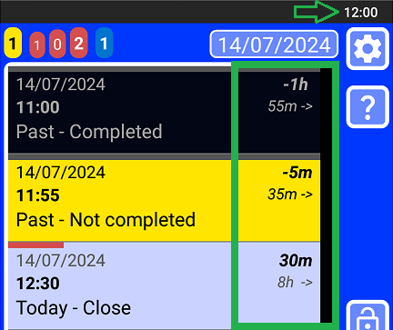

SECURElogBook is designed to be very easy to use, but familiarizing yourself with a few key tips will help you unlock its full potential:
1. SECURElogBook divides time into minutes and allows you to store information in each one, whether in the past or the future. In each of those minutes, you can create a record, task, hopping list or log an event. Everything will be stored in your timeline, then you can use the search system to search or group information to draw conclusion from it.

2. To manage the information, we basically have two windows. With SECURElogBook you don't need to delete anything. Alarms, food intake, workouts, ideas, shopping lists, ... one day, everything will become part of the past as records on your list. These records will be like our memories, but you can search or group them to draw conclusions from them. The main window (with blue background) allows you to do that:

A = Task counters are like radar that allow you to determine your workload at different times.
B = The date in the main window is a button that allows you to move the list to the yellow record closest to the present. If there are no yellow records, it will move the list to the present to show the next incoming record. Yellow logs are reminders/alarms that happened but you haven't reviewed yet.
C = Settings. Access to: security PIN, audio settings, date format, records delete system, import/export system and about window.
D = Help. Help documentation for this window.
E = App lock button.
F = List of records. Here you can find all your data. Tap on a record to edit it. The search results will also be displayed here.
G = Buttons to handle records: open last saved record, search and add record.
H = Stop alarm button.
Main web page has more information.
Then we have windows to create and edit information. Our information/record is made from: text (A), time (B) and information about whether it is completed or not (C). That is why there are controls to help you to handle text (A), notice that are connected with a line. To help you manage time there is an area with controls dedicated to that (B). Finally, to handle the other things related to the record, we have the record buttons (C):

A = Text area where you can open your favourite menu to tap instead of typing. You can change the favorites menu according to your needs to make things even faster.
B = Time controls area.
C = Record buttons: save, completed/not completed, List/Copy. The List button will be displayed when we edit a record and we did not change its time. Then we can press the button to add the text to create a list. If we edit a record and we change its time, the “L” (list) button will change to “C” (copy). This will allow to create a copy of that record every time we set a different time and we press “C” button.
D = Delete current record.
E = List of records. Hold on a record to edit it. This list will help you to schedule records more easily.
F = Help. Help documentation for this window.
G = Stop alarm button.
Main web page has more information.
The record buttons (C) are like a preview of how the record will look like. These buttons use conditional formatting to indicate, with colour, if the record is set in the future or in the past. Also, if the record is completed or not. It is like a traffic light that uses colour to let you know if the task/record is set in the future or in the past and if we completed it or not:
. Past:
Completed
. Future:
Completed

The button will toggle between completed and not completed status.
Thanks to this color system, it will be difficult to make mistakes since the colour will help you check if you are doing things right. For example, if you are setting an alarm to wake up tomorrow the record buttons must be blue, as that indicates that the record will be recorded in the future with an alarm. If the record buttons are not blue before saving the record, you have a problem as you are not creating a record with an alarm (blue record) 😉
The colour code system automatically makes less important records less visible while highlighting important ones:
. Dark = Completed records.
. Blue = Future records.
. Yellow = Missing records, that you must review as soon as possible.
3. You can press this button
4. Smart user interface design thanks to Enhanced Feedback & Intuitive Interface to make everything easier and faster. Every button provides animation and vibration on interaction, confirming user input and reducing frustration from potential app unresponsiveness. The app uses a visual language to clearly communicate the function of each control, eliminating guesswork and boosting user confidence.
Text boxes have square corners:

Buttons have round corners:

If the button has a thin edge (A) the action of the button will happen in the same window. If the edge line is thick (C), that means that the button will open a new window. If the edge line of the button is not continuous (B), that means that button has a hold action.
5. The life of a reminder/alarm is always the same. It starts as a blue record (with alarm). Then when the alarm goes off the record will turn yellow. Now it will be added to the yellow counter as the task is not completed. Once we complete the task, by pressing the button (I), it will turn the task/record black. Now that data belongs to the past and you will be able to access to if using the search system.

6. The date in the main window (with blue background colour) is a button that allows you to move the list to the yellow record closest to the present. If there are no yellow records, it will move the list to the present to show the next incoming record.
7. Yellow records are shown in task counters, notification and app badge. Because they are very important. They should be checked at least once or twice a day.
8. SECURElogBook allows you to remember everything, because when you add a reminder/record (blue or yellow), it will be highlighted and you won't be able to accidentally delete it.
9. The small list with all the records (C) inside the creator (green) or editor (teal) windows will show only records that match or follow the moment selected by time (11:55) and date (14/07/2024) of the record we are editing (A).

This means that every time you change the time or date, the list (C) will be updated to show records that are set at that time or after.
Also, when you edit a record (teal window), the list with all records (C) will show the same record as the first item on the list (B). Because the first record (B) on the list has the same time that the record we are editing. This will allow you to edit the record while still being able to view the original information.
10. If you edit a list item, the small list with all the records will show the entire list.
11. When you create (green window) or edit a record (teal window) you can hold on any record inside the list to open and edit that record. That makes moving and scheduling tasks very easy.
12. By default, the time for a new record (green window) is always set with the current time.
13. Every record dynamically shows the time gap between the current record and the present (on the right side, in bold), as well as the time difference between that record and the next (on the right side, marked with an arrow). Armed with this knowledge, scheduling your day becomes a piece of cake.

14. You can click the pop-up messages at the bottom of the window to close them.
15. To create multiple records quickly, it is faster to use the copy button than to create each record independently. That means it's faster to create the first record and hit the copy button. Then you can change the text and time and press the copy button. This will create multiple records without leaving the window. Additionally, this method will use the first record as a reference for the time.
Congratulations, you are now a SECURElogBook advance user!